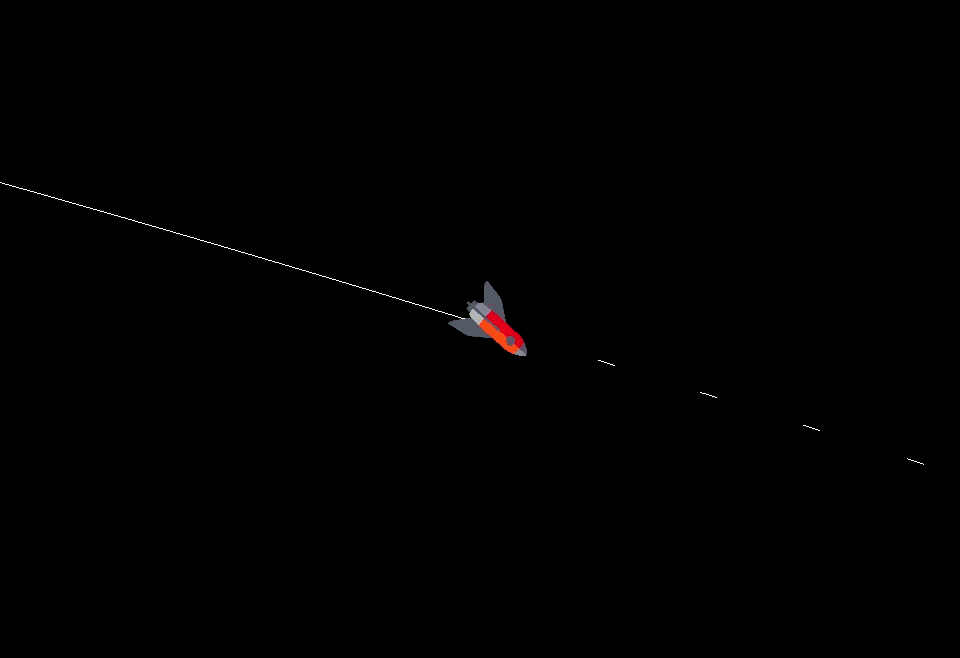

Projects

Barnes-Hut Gravitational Simulation
A high-performance N-body simulation written in Python and C++, visualizing gravitational interactions between thousands of particles using a dynamic Barnes–Hut quadtree algorithm.
View on GitHub →
Quadtree Division System
A dynamic spatial partitioning engine built in Python, designed to efficiently divide and manage 2D space for simulations and rendering. Features recursive subdivision visualization and performance metrics for real-time optimization and debugging.
View on GitHub →
Laser Simulation
A physics-based laser reflection simulator built with C++ and Raylib, featuring accurate collision detection, reflective surfaces, and dynamic beam interactions. Designed to visualize optics principles through interactive ray behavior and real-time rendering.
View on GitHub →
Dolus
A teambased college project designed around audio encryption and secure obfuscation through commercial platforms
View on GitHub →
LibGDX Chess
A basic chess game built using the LibGDX framework in Java, which includes a gamestate manager using notation similar to FEN for saving and loading games.
View on GitHub →
Game of War
A java based simulation of the classic card game "War", with the intention of bruteforcing and analyzing probabilities over thousands of simulated games in a Monte Carlo fashion.
View on GitHub →
Probability and Applied Statistics
A java project focused on the implementation of statistical functions and the visualizations of data through tools like JFreeChart. This was the final project for a college level Probability and Applied Statistics course.
View on GitHub →
Canvas Test
A Javascript canvas test for learning Webgl2, shaders, and GPU programming through a web interface.
View on GitHub →
My Personal Website/Portfolio
A carefully created personal website and portfolio to showcase my projects, skills, and experience as a developer, which you are currently viewing!
View on GitHub →
Advanced Solar Simulation
A carefully created personal website and portfolio to showcase my projects, skills, and experience as a developer, which you are currently viewing!
View on GitHub →